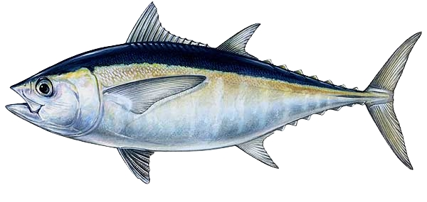
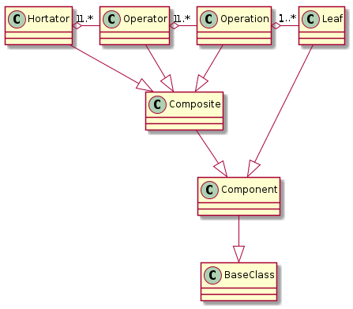
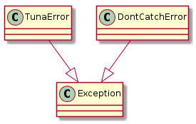
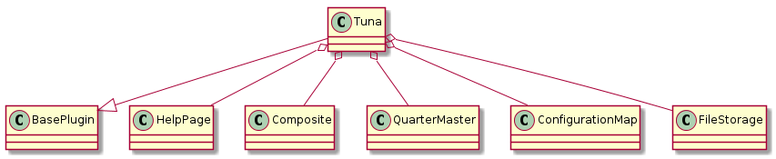

The Tuna Plugin¶
This is the plugin that creates the master composite to run other Composites. It will be used when the run subcommand is called by the user.
The Components¶

The Hortator, Operator and Operation are instances of the Composite and so aren’t functionally different but they catch different levels of exceptions so that there can be a certain level of self-recovery and error handling. Each execution of the tuna have one Hortator composed of Operators (one Operator per configuration file with a TUNA section). Each line in the TUNA will correspond to an Operation composed of Leafs (one Leaf per item on the comma-separated line). Each Leaf is a plugin’s product. Thus when a plugin is created, the product should inherit from the Component class in order to make sure it has the same interface.
The reason for differentiating the three Composites is to allow different levels of error handling. For instance, differentiating Operation vs Operator allows the user to decide on a set of plugins that will be called even if the first set crashes. e.g.:
[TUNA]
op_1 = WatchRSSI,IperfSession
op_2 = CleanUp
When translated to objects, this configuration would create one Operation composite for each line and both lines would be composed in an Operator (and if there are multiple config-files with [TUNA] sections, an Operator will be created for each and all Operators will be composed in the Hortator). If one of the Leafs in op_1 (WatchRSSI or IperfSession) crashes in a predictable way (raising a TunaError or the equivalent) then the op_2 Leaf (CleanUp) should still be executed. The reason for only catching tuna-defined exceptions is so that if something is really wrong with the code or system and another exception is raised (either a python-built-in exception or from an external third-party package), it will be assumed that the configuration is un-runnable and the Hortator will move on to the next Operator.
The Errors¶

Since the two errors are siblings, catching the TunaError won’t catch the DontCatchError.
The Run State Diagram¶
The assumed flow for the run sub-command is something like this:
![digraph run_state_diagram {
rankdir = LR
pa [label="Parse Args"]
bc [label="Build Map"]
bo [label="Build Composites"]
run [label="Run", shape=diamond]
data [label="Data", shape=rect]
start [label="Start", shape=diamond]
configurations [label="Configurations", shape=rect]
start -> pa [label="args"]
pa -> bc [label="name"]
configurations -> bc [label="config"]
bc -> bo [label="map"]
bo -> run [label="Hortator"]
run -> data [label="datum"]
}](../_images/graphviz-657cee19610f9c185dd5091178e11c95525d72f5.png)
This means:
- The Parse Args state has been reached before this plugin is created.
- The Build Map uses a ConfigurationMap <configuration-map>
- the Build Composites happens in creating the
product

The API¶
Tuna |
|
Tuna.help |
|
Tuna.product |
|
Tuna.fetch_config |
|
Tuna.arguments |
|
Tuna.sections |
Warning
The ConfigParser adds all options in the DEFAULT section to the other sections. I am assuming that anything in the DEFAULT section that is the same as something in the TUNA section (same option:value) should be ignored.
Using External Plugins¶
In order to allow the execution of plugins that are not a part of the ape, I am allowing the declaration of
modules in the configuration file:
[MODULES]
package.module
Or something similar. The ape will search modules named in the MODULES section for children of the ape.plugins.base_plugin.BasePlugin class and load and call them if found. The idea is that rather than having to mix up the ape and other packages, a sandbox package can be setup with plugins that act as the interface between the ape and the other package(s).
Using the FakePlugin created for the Exploring External Imports section, the config file for the ape could look something like this:
[TUNA]
operation_1 = FakePlugin
[MODULES]
fakepackage.fakeplugin
[FakePlugin]
plugin = FakePlugin
option = value
The FakePlugin returns a DummyClass as its product so the FAKEPLUGIN section doesn’t really do anything.
Note
In order to allow more than one instance of a plugin to be created, the plugin=<plugin class name> line was added. Each section that configures a plugin needs it. The header for the section is arbitrary but must match the value defined in the APE section.
If we wanted to configure a second FakePlugin, for instance, we could do something like this:
[APE]
operation_1 = apple, banana
[MODULES]
fakepackage.fakeplugin
[apple]
plugin = FakePlugin
option = value
[banana]
plugin = FakePlugin
options = other_value
This is the intended way for it to work, anyway. If the plugin wasn’t built to use the section_header attribute when retrieving section information it won’t work.